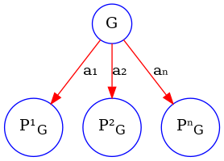
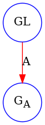
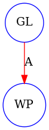
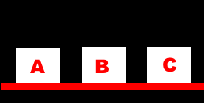
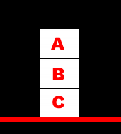

Inteligencia Artificial
Germán Braun
Planificación: Regresión
Created: 2024-11-07 jue 11:28
Table of Contents
Repaso
¿Qué vimos?
- Representación de las acciones: STRIPS, Situation Calculus, Event Calculus
- Problemas en la representación del Cambio: Frame, Ramification y Qualification
- Representación del tiempo
- Algoritmos Forward y basados en resolución
- Algoritmo STRIPS. Problemas con el algoritmo
- HOY Algoritmos de Planificación: Regresión
Mundo de Bloques
Estado Inicial
Estado Inicial
libre(a), libre(c), sobre(b, mesa), sobre(a, mesa), sobre(c,b)
Estado Final
libre(a), sobre(b,c), sobre(a,b), sobre(c, mesa)
- Acción MOVE(X,P1,P2): movemos el bloque X de la posición P1 a la posición P2
- Lista de Precondición: P2 \(\neq\) mesa - bloque(P2), libre(X), bloque(X), libre(P2), sobre(X,P1).
- Lista Add: libre(P1), sobre(X,P2).
- Lista Del: libre(P2), sobre(X,P1).
Planificadores
Problemas con los Planificadores
- Existen planificadores forward pero tienen problemas con el tamaño del espacio de búsqueda que generan.
- El planificador de STRIPS si bien toma una meta y ve que acciones la logra, es decir es un planificador backward, Este planificador tiene un problema que no es trivial: algunas acciones pueden deshacer metas ya alcanzadas
Planificación por Regresión
Regresión
- Este algoritmo reduce el factor de ramificación porque trabaja desde las metas hacia atrás, eligiendo solamente aquellas acciones que alcanzan alguna de las metas a lograr.
- Asimismo trata el problema de las submetas que están en relación, ya que no intenta resolver las metas por separado, sino que sigue la pista a todas las metas que tiene que lograr.
Planificación por Regresión
- Podemos analizar el algoritmo en términos de un grafo de búsqueda.
- Los nodos están etiquetados con conjuntos de metas y los arcos corresponden a las acciones.
- Un nodo etiquetado con el conjunto de metas G tiene un nodo vecino por cada acción A que logre una de las metas en G.

Precondición más débil
- El vecino que corresponde a la acción A es etiquetado como \(G_A\).
- \(G_A\) tiene que ser verdadera inmediatamente antes de ejecutar la acción A.
- \(G_A\) se llama precondición más débil para la acción A y la lista de metas G.
- \(wp(A,GL,G_A)\) es verdadera si \(G_A\) es la precondición más débil que ocurre inmediatamente antes de la acción A de modo que cada elemento en la lista de metas GL sea verdadera después de la ejecucción de A.
Es la más débil ya que cualquier otra precondición debe implicarla.

Precondición más débil
En STRIPS, \(wp(A,GL,WP)\) se define como sigue:
- Es falso si algún elemento de GL está en la lista de borrado de la acción A. En este caso es imposible para todo elemento en GL ser verdadero inmediatamente después de la acción A.
De otro modo, el valor de WP es \[precondiciones(A)\cup \{G\in GL: G\not\in add\_list(A)\}\] donde precondiciones(A) es la lista de precondiciones de A y \(add\_list(A)\) es el conjunto de condiciones que agrega la acción A.

Precondición más débil
Ejemplo sobre el mundo de bloques
Encontremos la precondición más débil para \[GL=\{sobre(b,c), sobre(a,b),libre(a),sobre(c,mesa)\}\] con la acción \(move(a,mesa,b)\).
Acción \(move(a,mesa,b)\)
- Lista de Precondición: bloque(b), libre(a), bloque(a), libre(b), sobre(a,mesa).
- Lista Add: sobre(a,b)
- Lista Del: libre(b), sobre(a,mesa).
¿Es falso?
Debemos verificar que ningún elemento GL está en la lista de borrado de la acción A.
Precondición más débil
Ejemplo sobre el mundo de bloques
Encontremos la precondición más débil para \[GL=\{sobre(b,c), sobre(a,b),libre(a),sobre(c,mesa)\}\] con la acción \(move(a,mesa,b)\).
Acción \(move(a,mesa,b)\)
- Lista de Precondición: bloque(b), libre(a), bloque(a), libre(b), sobre(a,mesa).
- Lista Add: sobre(a,b)
- Lista Del: libre(b), sobre(a,mesa).
- \(precondiciones(A)\cup \{G\in GL: G\not\in add\_list(A)\}\)
\(\{bloque(b), libre(a), bloque(a), libre(b), sobre(a,mesa)\}\cup \{sobre(b,c), libre(a),sobre(c,mesa)\}\)
Precondición más débil
Ejemplo sobre el mundo de bloques
Encontremos la precondición más débil para \[GL=\{sobre(b,c), sobre(a,b),libre(a),sobre(c,mesa)\}\] con la acción \(move(b,c,a)\).
Acción \(move(b,c,a)\)
- Lista de Precondición: bloque(a), libre(b), bloque(b), libre(a), sobre(b,c).
- Lista Add: libre(c), sobre(b,a).
- Lista Del: libre(a), sobre(b,c).
¿Es falso?
Debemos verificar que ningún elemento GL está en la lista de borrado de la acción A.
Precondición más débil: Algoritmo
El algoritmo que se presenta a continuación tiene algunas simplificaciones:
- No tiene en cuenta las relaciones derivadas.
- Pueden existir elementos repetidos en la precondición más débil.
Precondición más débil: Algoritmo
% wp( A, GL, WP ) es verdadera si WP es la precondición
% más débil que debe ser cierta inmediatamente antes de A,
% de modo que A es posible y cada elemento de la lista de
% metas GL es verdadera inmediatamente después de A.
% Si no hay metas por cumplir, entonces la precondición más
% débil es el conjunto de las precondiciones de la acción A.
wp(A,[],P) :-
preconditions(A,P).
wp(A,[G|R],P1) :-
wp(A,R,P0),
regress(G,A,P0,P1).
Precondición más débil: Algoritmo
% regress(G,A,P0,P1) es verdadera si P1 es una lista de
% condiciones que extiende P0 para incluir las condiciones
% suficientes que deben valer inmediatamente antes de A
% como para garantizar que G es verdadera inmediatamente
% después de A.
regress(G,A,P,P) :- achieves(A,G).
% G es una meta que alcanzamos con la acción A.
% G es una meta que pertenece a la lista Add de la acción A.
achieves(Action,Goal) :- member(Goal,add_List(Action)).
Precondición más débil: Algoritmo
% Si G no está entre las metas que se logran con la acción A
% entonces debe permanecer entre las metas a resolver
% más adelante.
% Sin embargo, deberemos controlar que la acción A no la
% contenga entre las metas que deja de hacer cumplir
% (ie, las de la lista Delete).
% No pertenece a la add list de la acción A, luego debe
% cumplirse desde antes de la acción A.
regress(G,A,P,[G|P]) :-
not_on_add_list(A,G),
not_on_delete_list(A, G).
¡ATENCIÓN! La acción A no borra a G.
Esto permite controlar que NO se deshaga una meta ya lograda.
Planificador por Regresión
- Un problema de planificación se resuelve con un planificador por regresión dándole un conjunto de metas que deben ser verdaderas en el estado final.
- El problema fue resuelto cuando el conjunto de metas es verdadero en el estado inicial.
- Un planificador por regresión trabaja manteniendo un conjunto de metas a ser alcanzadas en un momento dado.
Planificador por Regresión
IDEA
El planificador elige una meta a resolver y luego elige una acción, que será la última en ejecutarse y que alcanza la meta seleccionada.
Calcula la precondición más débil que debe ocurrir antes de que la acción se ejecute, de modo que el conjunto de metas sea verdadera después de la acción.
Así regresamos desde las metas finales a través de las acciones.
Luego logramos un plan que resuelva el nuevo conjunto de metas y continuamos hasta que las metas que alcanzamos son verdaderas en el estado inicial.
Planificación por Regresión
% solve(GL,W) es verdadero si todo elemento de la lista GL
% es verdadero en el mundo W
solve(GoalSet,Init) :-
holdsall(GoalSet,Init).
solve(GoalSet,do(Action,W)) :-
consistent(GoalSet),
choose_goal(Goal,Goalset),
choose_action(Action,Goal),
wp(Action,GoalSet,NewGoalSet),
solve(NewGoalset,W).
Planificador por Regresión
Algunas consideraciones:
- El problema de decidir cuando un conjunto de metas no es consistente o no es alcanzable no es fácil de resolver desde las acciones y sus efectos. Por ejemplo, no deseamos entre nuestras metas que un objeto esté en dos posiciones. Esto requiere de conocimiento específico del dominio.
- La detección de ciclos puede ser incorporada al planificador por regresión. Se dice que una meta \(G_1\) es más simple que una meta \(G_2\) si \(G_1\subseteq G_2\). Si durante la búsqueda encontramos un nodo \(N\), pero uno de sus ancestros \(N^{\prime}\) es el mismo o más simple, podemos podar \(N\). Recordar que el proceso es backward.
El plan que devuelve este planificador da un orden total sobre las acciones aún cuando no es necesario. Este orden total tiende a incrementar la complejidad del espacio de búsqueda.
Mundo de Bloques: Ejemplo

Estado Inicial

Estado Final
Mundo de Bloques: Ejemplo
\[\{sobre(b,c), \color{red}{sobre(a,b)},libre(a),sobre(c,mesa),bloque(b),bloque(a),bloque(c)\}\]
\[move(a,mesa,b)\]
\[\{bloque(b), libre(a), bloque(a), libre(b), sobre(a,mesa)\}\cup \] \(\{\color{red}{sobre(b,c)}, libre(a),sobre(c,mesa), bloque(c)\}\)
\[move(b,mesa,c)\]
\[\{bloque(c),bloque(b),libre(a),bloque(a),libre(b),sobre(a,mesa),\] \(sobre(b, mesa),sobre(c,mesa), libre(c)\}\)
Bibliografía
Referencia Bibliográfica
 D. Poole, A. Mackworth y R. Goebel
Computational Intelligence: A Logical Approach.
Capítulo 8
1998
D. Poole, A. Mackworth y R. Goebel
Computational Intelligence: A Logical Approach.
Capítulo 8
1998